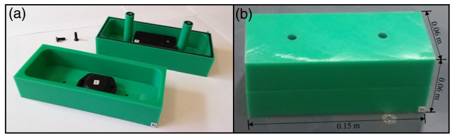
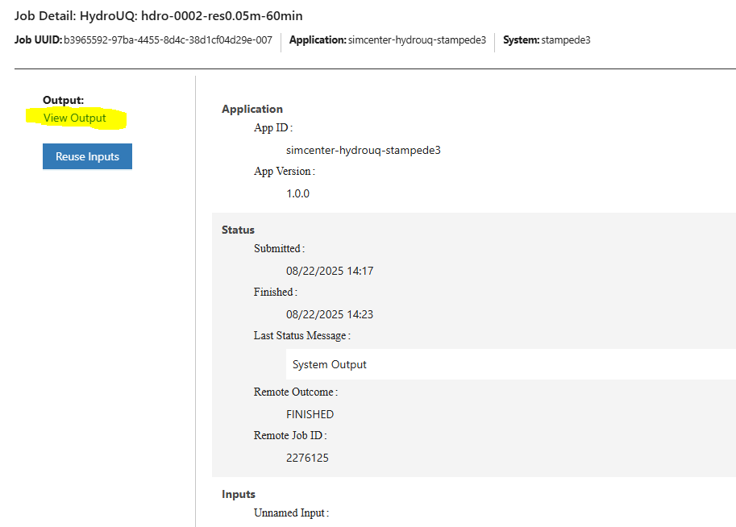
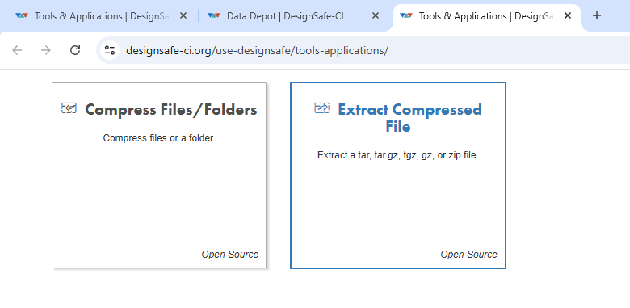
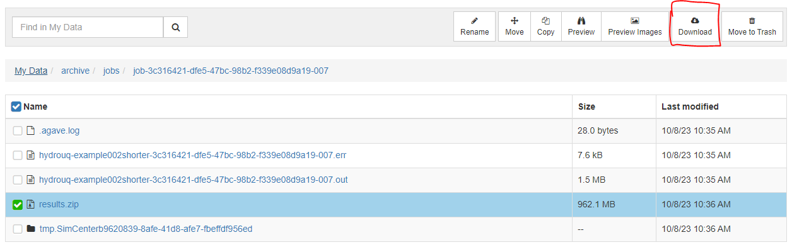
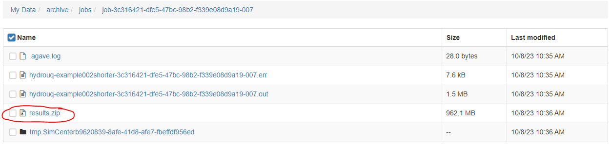

4.5. Tsunami Debris Motion Through a Scaled Port Setting - WU TWB Digital Twin - MPM
Problem files |
4.5.1. Outline
Example to demonstrate how to run a MPM simulation to determine loads on an array of port buildings during a tsunami with respect to debris impacts and damming. Replicates at low resolution the comparative analysis paper results of [Bonus2025].

Fig. 4.5.1.1 Simulation of three MPM tsunami debris simulations on zero, one, and two rows of five obstacles replicating a port-setting at a Froude scale of 1:40.
Stochastic experiments were performed at the Waseda University Tsunami Wave Basin (WU TBW) flume. Here we replicate it in a simple digital twin with HydroUQ’s MPM module. The flume is 4 meters wide (from X=-2m to X=2 m), 1 meter tall (Z=0.0m to Z=1.0m), and 9 meters long (Y=0.0m to Y=9.0m). The case is initialized with a still water level of 0.23 meters.

Fig. 4.5.1.2 Schematic of Waseda University’s Tsunami Wave Basin (WU TWB) and sensor locations
“Smart” debris were used in the experiments, shown below. In MPM they are modeled as fixed-corotated debris.
{kind=link}

Fig. 4.5.1.3 Smart debris used in experiments
4.5.2. Set-Up
To configure the digital twin case in HydroUQ, the following settings will be specified.
4.5.3. Simulation
Simulation Time: 6 seconds - Ran on TACC Lonestar6, 56 processors, 3 NVIDIA A100 GPUs, 1 node -> Real Time: 1hr, 20 minutes
The case can be run for as long as desired, but mind that the longer the case runs, the longer the postprocessing routines will be.
In order to retrieve results from the analysis, the analysis must complete and postprocess the model output files into a VTK format before the end of the allotted submission time.
Provide a large amount of time for the ‘Max Run Time’ field in HydroUQ when submitting a job to ensure the model completes before the time allotted runs out!
Be aware that the smaller the OpenFOAM Outputs and OpenSees Outputs ‘Time Interval’ value is, the longer the post-processing of the case will take after analysis has been completed, and the larger the results.zip folder will be.
Warning
Use caution when requesting sensors and using high sampling rates. Only ask for what you need, or you will end up with massive amounts of data.
4.5.4. Analysis
Retrieving the results.zip folder from the Tools and Applications Page of Design Safe..

Fig. 4.5.4.1 Locating the job files on DesignSafe
Check if the job has finished. If it has, click ‘More info’.
{kind=link}
Fig. 4.5.4.2 Once the job is finished, the output files should be available in the directory to which the analysis results were sent
Find the files by clicking ‘View’.
{kind=link}

Fig. 4.5.4.3 Locating this directory is easy.
Move the results.zip to somewhere in My Data/. Use the Extractor tool available on DesignSafe. Unzip the results.zip folder.
{kind=link}

OR Download the results.zip folder to your PC and unzip to look at the model results.
{kind=link}

Fig. 4.5.4.4 Download the results to look at the VTK files of the analysis. This will include OpenFOAM and OpenSees field data and model geometry
Extract the Zip folder either on DesignSafe or on your local machine. You will need Paraview to view the model data.
{kind=link}

Fig. 4.5.4.5 Locate the zip folder and extract it to somewhere convenient
Comparative results between the Material Point Method (MPM, HydroUQ), Smoothed Particle Hydrodynamics (SPH, DualSPHysics), and the Finite Volume Method (FVM, STAR-CCM+).:

Fig. 4.5.4.6 Comparative results for wave gauge free-surface measurements

Fig. 4.5.4.7 Comparative results for debris displacement

Fig. 4.5.4.8 Comparative results for debris spreading angle

Fig. 4.5.4.9 Comparative results for debris-structure loads
4.5.5. References
[Bonus2025] Justin Bonus, Felix Spröer, Andrew Winter, Pedro Arduino, Clemens Krautwald, Michael Motley, Nils Goseberg (2025). “Tsunami Debris Motion and Loads in a Scaled Port Setting: Comparative Analysis of Three State-of-the-Art Methods Against Experiments.” Coastal Engineering. Volume 197. https://doi.org/10.1016/j.coastaleng.2024.104672.